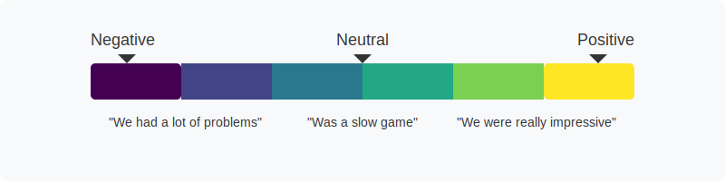

05 using text as data
2025-03-24
“In the second half, especially after we scored for 1-1, I thought we were really impressive. We created so many opportunities, good chances. Then [the result] feels like a disappointment.”
“In the second half, especially after we scored for 1-1, I thought we were really impressive. We created so many opportunities, good chances. Then [the result] feels like a disappointment.”
We’ll analyze a post-match interview with a Premier League manager to:
Detecting emotion and tone in text
Positive segments: > “In the second half, especially after we scored for 1-1, I thought we were really impressive.” > “PLAYER’s finishing is so clinical.”
Negative segments: > “Then [the result] feels like a disappointment.” > “We tried to cope with it, but every time we touched them we got a yellow…”
Mixed segments: > “In the first half we had a lot of problems with their intensity, aggressive playing style…”
We’ll cover the following concepts:
And discuss:
Corpus The full text material. Here interviews. Could be a book or articles.
Bag of words: Text representation that counts word occurrences, ignoring grammar and word order
💡 Tokenization is breaking text into meaningful units (tokens)
Original text from our interview: > “In the second half, we were really impressive. We created many opportunities.”
Tokenized:
["In", "the", "second", "half", ",", "we", "were", "really", "impressive", ".", "We", "created", "many", "opportunities", "."]
Why it matters: Foundation for all text analysis - determines what counts as a “word”
💡 Stemming: Algorithmically removes word endings - Fast but sometimes creates non-words
Examples from our interview
Purpose: Unifies different forms of the same word to avoid treating them as separate concepts
Lemmatization: Converts to dictionary base form - More accurate but computationally intensive
Examples from our interview
Purpose: Unifies different variations of the same word to avoid treating them as separate concepts
Let’s look at our manager’s interview:
Original excerpt: > “We tried to cope with it, but every time we touched them we got a yellow and that doesn’t really help for us to be intense then as well.”
After preprocessing:
["try", "cope", "touch", "get", "yellow", "help", "intense", "good"]
Benefits:
Bag of Words Text representation that counts word occurrences, ignoring grammar and word order
Example from our interview: > “In the first half we had a lot of problems with their intensity, aggressive playing style without the ball – aggressive in a good way.”
Bag of Words representation:
[ “first”: 1, “half”: 1, “lot”: 1, “problems”: 1, “intensity”: 1, “aggressive”: 2, “playing”: 1, “style”: 1, “ball”: 1, “good”: 1, “way”: 1]
What we can learn:
What’s missing from our coach’s interview:
Extensions to address limitations:
Let’s analyze the coach’s interview:
Top 10 most frequent content words:
What this tells us: - Focus on individual player performance - Comparison between first and second half - Emphasis on quality of play and intensity
💡 Bigrams (2-word phrases) from our interview:
Trigrams (3-word phrases):
Benefits:
💡 Term Frequency-Inverse Document Frequency (TF-IDF) Weights words by importance in a document compared to a collection
Example: Comparing our interview with other post-match interviews
Common words in all interviews (low TF-IDF):
Distinctive words in this interview (high TF-IDF):
Benefits:
What we have
What we need
Detecting emotion and tone in text
Sentiment
Positive segments: > “In the second half, especially after we scored for 1-1, I thought we were really impressive.” > “PLAYER’s finishing is so clinical.”
Negative segments: > “Then [the result] feels like a disappointment.” > “We tried to cope with it, but every time we touched them we got a yellow…”
Mixed segments: > “In the first half we had a lot of problems with their intensity, aggressive playing style…”
Popular Libraries: - NLTK’s VADER, TextBlob, AFINN, SentiWordNet
Examples
code creates sentiment score
Advantages:
Limitations:
AI
process
Creating a sports-specific lexicon
prompt
Review this uploaded corpus. Create a new specific lexicon to analyse sentiments. Assign sentiment scores. Output is a domain_lexicon.csv.
Creating a sports-specific lexicon:
Advantages:
Limitations:
Types of ML approaches:
Advantages:
Limitations:
Using Large Language Models (LLMs): - GPT-4, Claude, etc. for sentiment analysis - Feed individual text examples for classification - Ask for nuanced, multi-dimensional analysis
prompt Rate the sentiment of this football manager interview on a scale from -2 (very negative) to +2 (very positive):
Provide only the numerical score.
OR
Provide only the numerical score and an explanation. Offer your level of confidence.
Text:
“In the second half, especially after we scored for 1-1, I thought we were really impressive. We created so many opportunities, good chances. Then [the result] feels like a disappointment.”
LLM Response:
The sentiment score is +1 (somewhat positive).
The coach expresses clear satisfaction with the team’s second-half performance (“really impressive”), highlighting positive elements like creating “many opportunities.” However, there’s disappointment about the final result, creating a mixed but predominantly positive sentiment.
Advantages:
Limitations:
Consider:
Hybrid approaches often work best: - Start with pre-built libraries but enhance with domain-specific terms for key concepts - compare with AI models (class 06)
class 05
Class 06
NLP Pipeline
steps
1.** Collect Corpus** (manager interviews)
2. Preprocess (clean, tokenize, possibly POS-tag)
3. Choose Method (BoW + library, advanced or LLM-based approach)
4. Analysis (sentiment score 0-1)
5. Discussion (numeric categories)
key issue
Key Takeaways:
Gabors Data Analysis with AI - 2025-03-24 v0.3